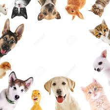

Tu mascota ideal
Ayudanos a descubrir quien seria tu mascota ideal llenando este formulario...
Como prefieres tu mascota
con pelo
o sin pelo
aun nose
Male
Female
Que talla de mascota te gustaria...
Talla grande
Talla mediana
Talla chica
Escribe mas sobre tu mascota ideal...
Ayudanos Escribiendo un correo electronico para decirte cual seria tu mascota ideal...

Que son las mascotas?